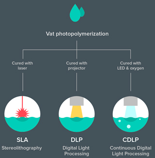
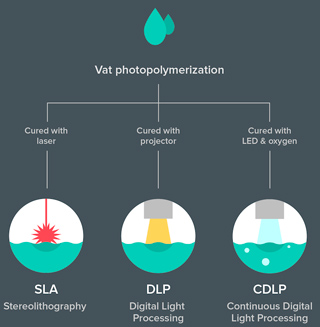

Lịch sử hình thành và phát triển
C ông nghệ in 3D lần đầu tiên được biết đến vào cuối những năm 1980, với tên gọi là
 

Tuy vậy, về mặt thực tế, nguồn gốc của in ấn 3D có thể được tính từ năm 1986, khi bằng sáng chế đầu tiên được cấp cho thiết bị in li-tô lập thể (Stereolithography Apparatus - SLA). Bằng sáng chế này thuộc về Charles Chuck Hull, người đầu tiên phát minh ra máy SLA vào năm 1983. Hull cũng là người đồng sáng lập Tổng Công ty Hệ thống 3D (3D Systems Corporation) - một trong những công ty hàng đầu trên thế giới hoạt động trong ngành in 3D hiện nay.
Năm 1988, tại trường Đại học Texas, Hoa Kỳ, Carl Deckard mang về bản quyền sáng chế cho công nghệ tạo mẫu nhanh SLS. Cùng năm đó, Scott Crump (đồng sáng lập của Stratasys sau này) đã có được bản quyền cho công nghệ in 3D đùn nhựa (FDM). Vậy là trong vòng chưa tới 10 năm, 3 công nghệ in 3D chủ chốt đã được khai sinh: SLA – SLS – FDM.